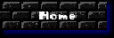

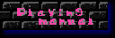


| オプション | 説明 |
|---|---|
| help --help -h /? |
コマンドラインのヘルプを表示します。 |
| version -version --version -v |
バージョンを表示します。 |
| window_xy=x,y | ウィンドウの表示位置となります。 x,yにそれぞれデスクトップの座標をピクセル単位で指定します。 このパラメータを指定しない場合は、デスクトップの中央に表示します。 |
| window_mag=magnification | ウィンドウの表示倍率となります。 magnificationに倍率を指定します。 例として3倍の表示をしたい場合は3.0と指定します。 指定できる倍率は0.5～5.0で、範囲を外れた場合は0.5または5.0となります。 このパラメータを指定しない場合は、2倍(2.0)となります。 |
| window_wh=width,height | ウィンドウの表示サイズとなります。 width,heightにそれぞれスクリーンの横縦サイズをピクセル単位で指定します。 window_magと違い、任意にスクリーンの横サイズと縦サイズを指定します。 指定できるサイズは横100～1600、縦100～1200で、範囲を外れた場合は等倍(256,240)となります。 このパラメータを指定しない場合は、2倍(512,480)となります。 ※window_magと両方を指定した場合は、後に書いた方が有効となります。 |
| [旧バージョン] window_fullscreen= width, height, RefreshRate, ColorBitDepth ※このパラメータは 一行で記述します [新バージョン] window_fullscreen |
フルスクリーン表示となります。 [旧バージョン](※OSにより機能しないことがあります。) width,heightにそれぞれスクリーンの横縦サイズをピクセル単位で指定し、 RefreshRate,ColorBitDepthにモニター周波数、カラービット数を指定します。 設定する値の意味が理解できない場合は、以下の『diagnose=2』パラメータを実行して、その結果を入力してください。 [新バージョン] 「=」以降の値は付けずに指定します。 画面の解像度は変えずに、デスクトップ全体にゲーム画面を拡大して表示します。 ゲーム画面の縦横比は保たれ、余った左右または上下は黒く表示されます。 |
| framerate=rate | ゲームの速さ(1フレームの時間)の設定となります。 rateに1フレームの時間をミリ秒単位で1～100の間にて指定します。値が小さいほどゲームが速く動きます。 範囲を外れた場合や、このパラメータを指定しない場合は、17(1秒間に約59フレーム)となります。 この設定はプレー中にF7キー(値を下げる)、F8キー(値を上げる)にて変更が可能です。 |
| sound_enable=mode | 音を鳴らす設定となります。 modeに1を設定するとON(有音)に、0を設定するとOFF(無音)になります。 このパラメータを指定しない場合は、1(ON)となります。 [旧バージョン] 0(OFF)で起動した場合は、プレー中にF5キーを押しても音は鳴りません。 1(ON)で起動した場合は、プレー中にF5キーにてON/OFF切り替えが可能です。 [新バージョン] 0(OFF)で起動した場合も、プレー中にF5キーにてON/OFF切り替えが可能です。 |
| [旧バージョン] bgm_external=mode |
BGMの外部読み込み設定となります。 modeに1を設定すると外部読み込みに、0を設定すると内部読み込みになります。 外部読み込みはユーザー任意のBGMファイルを用意してゲーム中のBGMを鳴らすことができ、内部ファイルはプログラム内に用意してあるBGMを鳴らすことができます。 ※Ver.01.04以下ではこのパラメータを指定しない場合は、1(外部読み込み)となります。 ※Ver.01.05以上ではこのパラメータを指定しない場合は、0(内部読み込み)となります。 ただし現在はプログラム内にBGMは殆ど用意されていません。 [新バージョン] このパラメータはありません。新バージョンはBGMが鳴ります。 |
| [旧バージョン] draw_mode=mode |
内部で行っている描画処理の設定となります。 modeに1を設定するとpaintImmediatelyにて描画を、0を設定するとrepaintにて描画を行います。 このパラメータは描画処理が正しく処理しない場合にのみ有効なものとなります。 特に描画に問題がない場合は指定をする必要はありません。 [新バージョン] このパラメータはありません。 |
| draw_detail_level=mode | 描画処理詳細度の設定となります。 modeに0～2を指定して詳細度レベルを設定します。 0にて全てを描画、1にて最背面の背景描画の抑制、2にて背景前景の描画の抑制を行います。 このパラメータは実行する環境で処理が間に合わない(スローモーションになる)場合に有効です。 範囲を外れた場合や、このパラメータを指定しない場合は、0(全てを描画)となります。 この設定はプレー中にF2キーにてレベル1のON/OFF、F3キーにてレベル2のON/OFFの切り替えが可能です。 |
| [旧バージョン] diagnose=mode |
診断モードとなります。 modeに1～5を指定してプログラム実行の診断を行えます。 ※現在は2のみサポートしています。 【モード2】 フルスクリーンサポート診断を行います。 実行するとフルスクリーン可能なパラメータが一覧表示されます。このパラメータを起動パラメータに指定して、起動するとフルスクリーン表示が行えます。 [例 640x480解像度,60Hz,32bitカラーで指定] java -jar ActionGame.jar window_fullscreen=640,480,60,32 [新バージョン] このパラメータはありません。(フルスクリーンは値を付けないwindow_fullscreenで行えます) |
【起動画面(IPL画面)】
プログラムが起動すると以下の画面が表示されます。

この画面は内部のキャラクターデータのチェックや等を確認する画面です。
この処理はスキップすることは可能で、STARTボタン(Qキー、またはEnterキー。新バージョンではゲームパッドのSTARTボタンも可)にてスキップが行えます。この処理が終了するとタイトル画面が表示されます。
 プログラムの終了方法
プログラムの終了方法

Sample Action Gameの終了方法は以下のとおりとなります。
| 終了方法 | 操作 |
|---|---|
| スタンダード終了 | タイトル画面にて"PROGRAM END"を選択して実行をします。 選択はWキーもしくはカーソルの↑↓キーにて、実行はQキーまたはEnterキーにて行います。 [新バージョン]ゲームパッドでは、選択はSELECTボタンまたは十字キー↑↓にて、実行はSTARTボタンにて行います。 |
| 強制終了 | [Windowsの場合] "Alt + F4"キーを押します。 [Linuxの場合] Windowマネージャ環境によります。 |
※スタンダード終了も強制終了も違いはありません。
操作キー
Sample Action Gameの操作キーは以下のとおりとなります。
【プレイヤー操作キー】
| アクション | キーボード | ゲームパッド [新バージョン] |
説明 |
|---|---|---|---|
| START／PAUSE | Q または Enter | START | [タイトル画面] カーソルが選択している内容の実行となります。 [ゲーム中] プレーの一時停止／再開となります。 |
| 選択 |
W または カーソルキー↑↓ | SELECT または 十字キー↑↓ | [タイトル画面] カーソルの移動を行います。 |
移動  |
カーソルキー ← → | 十字キー ← → または 左スティック |
プレイヤーの左右移動を行います。 |
しゃがむ |
カーソルキー ↓ | 十字キー ↓ または 左スティック |
プレイヤーをしゃがませます。 足元の攻撃などを回避する際にしゃがませます。 |
攻撃 |
Z | Xbox系: X または B PlayStation系: □ または ○ (左右のボタン) |
剣を振って攻撃を行います。 しゃがんでいる場合、ジャンプ中も攻撃可能です。攻撃中は盾の防御を行いません。 |
| 防御 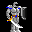 |
攻撃をしない | 攻撃をしていない(剣を振っていない)場合は盾を構えた防御となります。 | |
| ジャンプ 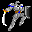 |
X | Xbox系: A PlayStation系: × (下のボタン) |
ジャンプを行います。 |
| フロアを降りる | カーソル↓ + X | ↓ + ジャンプ | しゃがんでいる状態でジャンプを行うと、薄い床を降りる事ができます。 |
※タイトル画面でキー入力を行わないでしばらくすると、操作に関するデモが始まるので参考にしてください。
[新バージョン]
Xbox系・PlayStation系などのゲームパッドで遊ぶことができます。旧バージョン(Java版)はキーボードのみとなります。
ゲームパッドとキーボードは同時に使うことができます。下の特殊設定キーはキーボードのみとなります。
【特殊設定キー】
| 設定 | キー | 説明 |
|---|---|---|
| 描画処理設定1 | F2 | 描画処理詳細度レベル1のON／OFF(切り替え式)となります。 最背面の背景描画の抑制を行います。 |
| 描画処理設定2 | F3 | 描画処理詳細度レベル2のON／OFF(切り替え式)となります。 最背面と背景前景の背景描画の抑制を行います。 |
| BGMのON／OFF | F4 | BGMのON／OFF(切り替え式)となります。 |
| 音声のON／OFF | F5 | 音全体のON／OFF(切り替え式)となります。 |
| フレームレート減少 | F7 | フレームレート値を下げます。 CPU処理に余裕がある場合はゲームスピードが上がります。 (動作が速くなります) |
| フレームレート増加 | F8 | フレームレート値を上げます。 ゲームスピードが下がります。(動作が遅くなります) |
| スクリーンショット | F12 | プレー画面のスクリーンショットを撮ります。 保存される場所はプログラムを実行したディレクトリ直下の"shot"ディレクトリとなります。もしも存在しない場合はshotディレクトリが生成されます。 ファイル名は"screen[日付時刻].png"となり、ビットマップフォーマットはPNG形式となります。 |
画面の表示内容
Sample Action Gameに表示される画面の説明を行います。 |
No. | 項目 | 説明 |
|---|---|---|---|
| 1 | タイトル | Sample Action Gameのタイトルとなります。 | |
| 2 | 選択カーソル | 実行を行う項目を示すカーソルとなります。 Wキーまたは↑↓キーにて選択を変更でき、QキーまたはEnterキーにて選択した項目を実行します。 |
|
| 3 | 初回スタート | ステージ1からゲームスタートを行います。 | |
| 4 | コンティニュー | ゲームオーバー後にゲームオーバーとなったステージより再プレーが行えます。 最初は表示されず、初回スタートにて3回分の回数が設定されて表示されるようになります。使用毎に回数が減り、回数が0になると表示されなくなります。 |
|
| 5 | ゲーム終了 | Sample Action Gameを終了します。 | |
| 6 | 著作権 | 著作権表示となります。 |
※タイトル画面でキー入力を行わないでしばらくすると、操作やゲームプレーデモが始まります。
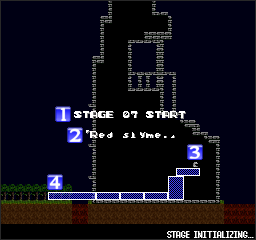 |
No. | 項目 | 説明 |
|---|---|---|---|
| 1 | ステージ番号 | 現在のステージ番号となります。 | |
| 2 | ステージ名 | ステージにつけられた名称となります。 | |
| 3 | プレイヤー地点 | プレイヤーの現在位置となります。 | |
| 4 | 進行状況 | クリアしたステージの進行状況となります。 部屋の形で塗りつぶされていきます。 |
 |
No. | 項目 | 説明 |
|---|---|---|---|
| 1 | プレイヤー | プレイヤーの騎士となります。 | |
| 2 | ライフ | プレイヤーのライフとなります。 水色の部分が全て無くなるとミスとなります。 |
|
| 3 | クリアキー | クリアドアを開けるための鍵となります。 | |
| 4 | クリアドア | 次のステージに進むためのドアとなります。 | |
| 5 | スタートドア | 前のステージから来た場所となります。 | |
| 6 | メッセージ | プレイヤーに対するゲーム進行のためのメッセージとなります。 | |
| 7 | プレイヤー残 | 残りのプレイヤー数となります。 | |
| 8 | 入手アイテム | プレイヤーが入手したアイテムとなります。 アイテムにより入手後に非表示になるものもあります。 |
|
| 9 | 残り時間 | ステージに与えられている時間となります。 時間が0になるとタイムアウト攻撃が始まります。 |
|
| 10 | ステージ番号 | 現在のステージとなります。 |
ゲーム進行について
Sample Action Gameのステージ全体は建物(塔)となっており、頂上に呪いのかけられたクリスタルが存在します。プレイヤーの目的はこの呪いのクリスタルの破壊が目的となります。
【ステージクリア方法】
Sample Action Gameはステージクリアタイプのアクションゲームとなり、各ステージに存在する鍵(クリアキー)を入手し、次のステージに繋がる扉(クリアドア)を開けて進んでいきます。
鍵はステージに置いてあるものもあれば、モンスター(敵キャラクター)が隠し持っている場合など様々となります。
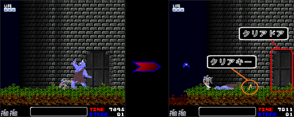 |
| 【例 ステージ1の場合】 １．塔の入り口を守るサイクロプスを倒すと鍵が出現します。 ２．鍵の入手後、クリアドアにプレイヤーを触れさせると扉が開きます。 ３．開ききった後の扉の空間にプレイヤーを触れさせるとステージクリアとなります。 |
【パワーアップと宝箱について】
プレイヤーは各ステージに隠されているパワーアップアイテムを見つけ出しパワーアップすることができます。
パワーアップアイテムにはプレイヤーのライフの上限を上げるもの、各ステージの持ち時間を増やすもの、プレイヤーの攻撃、防御力を上げるもの等、様々なものが存在します。
パワーアップアイテムは宝箱に入っており、この宝箱のアイテムを入手することが本ゲームの要となります。
宝箱出現方法については【ステージ5 [First indicate.]】の宝箱のアイテムである【メガネ [Glass]】を入手することにより、ヒントを入手することができます。
 |
... | 宝箱 | パワーアップアイテムが入っています。 |
 |
... | ベル | 宝物が出現すると知らせてくれます。 |
 |
... | ハート | プレイヤーのライフの上限が上がります。 |
 |
... | メガネ | プレー中にPAUSEを行うと覗くことができます。 宝箱出現のヒントやプレー進行のヒントが見えてきます。 |
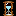 |
... | 砂時計 | 各ステージの持ち時間が増えます。 |
| ... | ポーション | プレイヤーのライフが回復します。 ポーションの形状により回復度合いが変わります。 |
 |
| 【例 ステージ1の場合】 金色のコウモリを倒すと塔の側辺りに宝箱が出現します。 宝箱にはベルが入っています。 |
【序盤ステージのプレー進行アドバイス】
Sample Action Gameは80年代のゲームをお手本にしているため、プレーを始めると
「ステージの進め方が分からない！放り出された！」や
「割と難易度が高く感じる！」
等を感じるかもしれません。
ここでは序盤ステージの一部の説明と難易度の高いと思われる箇所をダイジェストに紹介していきます。
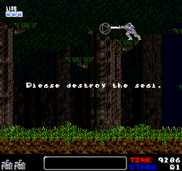 |
No.01 【Stage 01／The beginning.】 スタート地点から右に進んで最初のポイント。 封印が3つ浮いているので、ジャンプで木に登りながら剣で全てを破壊してください。 |
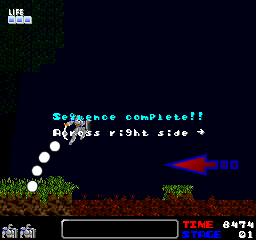 |
No.02 【Stage 01／The beginning.】 3つの封印を破壊すると、右のマグマ地帯から浮き島が出現します。 図の浮き島の位置に来たら端からジャンプ！ |
 |
No.03 【Stage 01／The beginning.】 島に乗ると右から青コウモリが来るので、剣で攻撃するか何もしないで盾で防ぎます。 盾で防ぐ場合はプレイヤーが反対に少し跳ね返されるので、島の右側にポジションを置くことがポイントです。 |
 |
No.04 【Stage 01／The beginning.】 サイクロプス戦です。サイクロプスはプレイヤーが立ち上がっていると顔面を攻撃、しゃがんでいると足元を攻撃してきます。 弱点は腹部となり、プレイヤーは立ち上がりの攻撃のみダメージを与えられます。(しゃがんでいると攻撃が当たりません) サイクロプスは攻撃前にほんの少し溜めの構えを行うので、これを攻撃の合図として攻撃を避けてください。 攻略法は、歩いてサイクロプスの側に近づき一撃入れて、すかさずしゃがんで上と下の攻撃を受けて後ろに押し戻されることを繰り返すか、歩いてダメージを与えたらすぐに後退をして間合いを開けながら攻撃をする方法があります。 サイクロプスを倒して次のステージに行く前に、金色のコウモリを倒して宝物を取る事を忘れないようにしましょう。 |
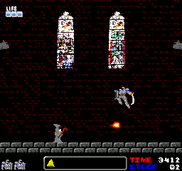 |
No.05 【Stage 02／Wizard.】 塔内に入ると次は杖から火の玉を出すウィザード戦です。 このウィザードの出す火の玉はプレイヤーが立った状態の盾で受けることができます(しゃがむと頭に当たります)。 ウィザードがワープをして火の玉出した後に攻撃猶予ができるので、近づいて攻撃をしましょう。 この部屋はウィザードを倒すとクリアキーが出現します。 操作に余裕がある場合、ウィザードの火の玉を盾で受けずに全て飛び越えて倒すと...!? |
 |
No.06 【Stage 03／Green slyme.】 Stage 03はグリーンスライムの部屋です。 グリーンスライムの攻略はおおよそ地面のレンガ1ブロック分程の間合いを持って攻撃するのがベターです。 スライムは移動や攻撃前にピクピク動作するので、これを目印に攻撃を行うと良いでしょう。 この部屋はクリアドアが右下、クリアキーが部屋の左上部にあるので、まずは鍵を取るために右側からジグザグに登って行きましょう。 |
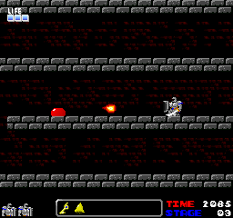 |
No.07 【Stage 03／Green slyme.】 左上部の鍵を取るとレッドスライムが出現します。 レッドスライムはStage 02のウィザード同様火の玉を出します。 ウィザードとの違いはプレイヤーの足元に火の玉を出してきます。このためクリアドアへの道はレッドスライムの火の玉をしゃがみながら受けていくことになります。 レッドスライムは3匹出現し、火の玉を出すタイミングは各自決まったタイミングを持っています。「だるまさんが転んだ」の様にレッドスライムに近づいて仕留めましょう。 最下段に出現するレッドスライムはタイミングがとてもタイトなので、倒さずに逃げるようにクリアドアに進むことが可能ですが、邪魔なので退治してしまう方が良い事があるかもしれません。 |
 |
No.08 【Stage 04／Zombie.】 最初の難関です。部屋の中央に入るとゾンビが2体攻撃を行ってきます。 ゾンビはゆっくりとプレイヤーに近づきながら放物線に肉片を投げてきます。 この肉片はプレイヤーの頭部になかなかのコントロールで投げてくるので、盾で受けながら(もしくは移動やジャンプ等で)回避してください。 放物線はプレイヤーから離れれば離れるほど真上に落ちてくることになるので、この辺りのアルゴリズムを理解すると盾で受けるべきか、移動して避けるべきか判断できると思います。 ゾンビはウィザードやスライムに比べて耐久力があるので、肉片投球の様子を伺いつつ連続攻撃をして倒してください。 この部屋にはポーションがあるので、もしも前のステージからダメージを多く受けていた場合はステージ開始直後にすぐに取りに行き、ライフの回復をしておくと良いでしょう。 |
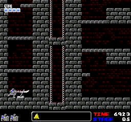 |
No.09 【Stage 05／First indicate.】 ゲームを進めるにあたり、最初のキーポイントとなるステージです。 このステージ開始時に見えている宝箱のアイテムはできる限り入手してください。 この宝箱への道は停止しているゴンドラを始動させる必要があります。その方法は部屋に2箇所あるスイッチを切り替えなければなりません。 スイッチの切り替えはスイッチに対して剣で攻撃すると切り替えることができるので、部屋内部を探索して見つけ出してください。 また宝箱への道以外のゴンドラ用スイッチは、切り替えの度にゴンドラの昇降／下降が切り替わります。 |
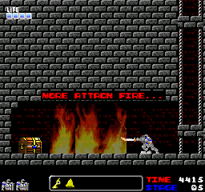 |
No.10 【Stage 05／First indicate.】 宝箱のある場所に到着すると部屋が炎で妨害している状況になっています。 ここで炎を剣で攻撃すると、あるメッセージが... このアイテムを入手するとメッセージが出るので支持に従ってみてください。 英語の意味が不可解の場合は、ここを参照してください。 |
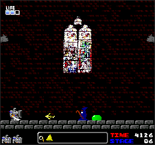 |
No.11 【Stage 06／Advanced wizard.】 Stage 04のゾンビステージに続いて第2の難関です。 このステージはStage 02のウィザードの強化版が登場します。このウィザードは高速な雷を杖から発射します。しかもプレイヤーの状況に合わせて上部／下部を打ち分けます。そして更に耐久力、移動速度も高いステータスを持つので、このステージに手こずる人も多いかもしれません。しかし、このステージ難易度が問題ないようであれば先のステージも目指しやすいと思いますので是非チャレンジしてみてください。 もしもStage 05のアイテムを入手している場合は、このステージ以降、ステージ開始時にこのアイテムを使用すると良いでしょう。 |
ここまでが序盤ステージの紹介となります。
このステージ以降、様々なアクションや敵、アイテム、見せ場等がありますので、多くの人がプレーをしていただけると嬉しく思います。
BGM
[旧バージョン説明]
Sample Action GameはBGMを外部ファイルに設定して鳴らすことができます。
(※正確には現時点でBGMが用意できないため後から設定できるように作成しました)
BGMは「BGMファイル」をプログラムファイル(ActionGame.jar)と同一のディレクトリに設置し、このBGMファイルに各シーン毎のBGMファイルを指定することによりゲーム中に音声が鳴ります。
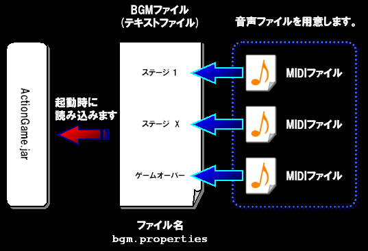
BGMファイルはActionGame.jarと一緒に提供され、提供時は「bgm.properties.skel」という名前となっています。
設定時には「bgm.properties」とファイル名を変更して、ActionGame.jarと同じディレクトリに置いておきます。
BGMファイルはテキストエディタで編集可能なテキストファイルとなっており、Javaのプロパティファイル方式のレコード情報が記述されます。
BGMファイルの内部レコードフォーマットは、提供されBGMファイル内の説明文(ファイル内にコメント文にて記述)を参照にしてください。
[新バージョン説明]
新バージョン(Rust版)はBGMが鳴ります。BGMはプログラムと一緒に提供されるため、BGMファイルの設定は必要ありません。
外部BGM(BGMファイル)の機能はなく、BGMファイル(bgm.properties)を置いても読み込みません。
BGMのON/OFFは、プレー中にF4キーにて切り替えが可能です。
<TOP>